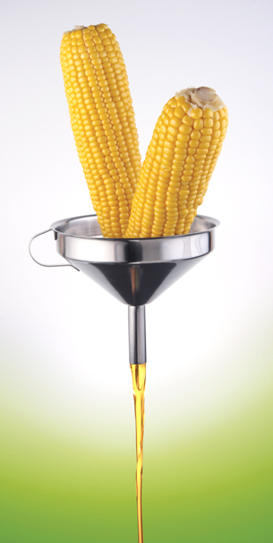

Module 6—Petrochemicals
Lesson 3—Alcohols
 Get Focused
Get Focused

© Artem Efimov/shutterstock
You may have heard of biofuels being used to fuel automobiles. Biofuel, or gasohol as it is called in many countries, is a mixture of gasoline and ethanol. In Canada you can purchase automobile fuel with up to ten percent ethanol. In countries like Brazil, the ethanol percentage is significantly higher.
Blending petroleum and ethanol is somewhat like diluting the petroleum component of gasoline while ensuring the energy content of the fuel. In Brazil, where all petroleum is imported but there are substantial resources to make ethanol, blending allows the country to make the greatest use of its resources.
Like other petrochemicals, ethanol can be produced from the hydrocarbon ethene using an addition reaction. Ethanol can also be produced by fermenting corn and other crops. Is producing ethanol by fermentation a more preferred option than producing ethanol by chemical synthesis?
In Lesson 3 you will learn about the different methods of producing ethanol and the properties of similar molecules called alcohols.
Consider the following questions as you complete Lesson 3:
- What are alcohols?
- Are alcohols being produced and used in a responsible way?
 Module 6: Lesson 3 Assignment
Module 6: Lesson 3 Assignment
Download a copy of Module 6: Lesson 3 Assignment to your computer now. You will receive further instructions on how to complete this assignment later in the lesson.
You must decide what to do with the questions that are not marked by the teacher.
Remember that these questions provide you with the practice and feedback that you need to successfully complete this course. You should respond to all the questions and place those answers in your course folder.